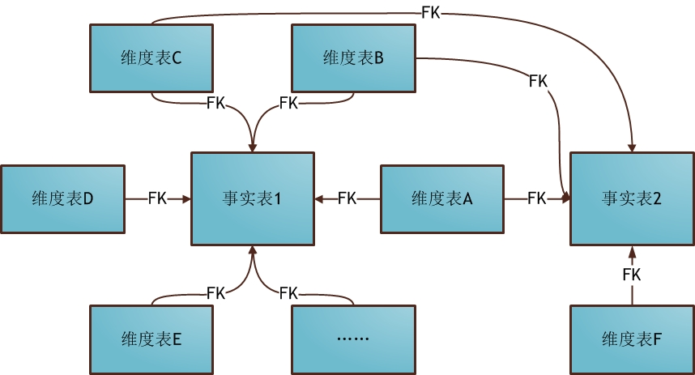

# 数据仓库
数据仓库是一个面向主题的（Subject Oriented）、集成的（Integrate）、相对稳定的（Non-Volatile）、反映历史变化（Time Variant）的数据集合，它用于支持企业或组织的决策分析处理。用于支持决策，面向分析型数据处理，它不同于企业现有的操作型数据库；对多个异构的数据源有效集成，集成后按照主题进行了重组，并包含历史数据，而且存放在数据仓库中的数据一般不再修改
- 面向主题：数据仓库是根据主题来建立的，数据仓库的主题指企业中某一宏观分析领域涉及的对象，也就是我们所设计事实表。
- 集成的：数据仓库的数据来源多样，有从业务数据库来的，有从文件系统来的，有基于消息中间件来的，所以我们需要对原有分散的数据库数据抽取、清理的基础上经过系统加工、汇总和整理得到的，必须消除源数据中的不一致性，以保证数据仓库内的信息是关于整个企业的一致的全局信息
- 相对稳定：数据仓库的数据用于支持上层决策分析之用，所涉及的数据主要用于查询，一旦数据进入某个数据仓库以后就会被保留下来，即从创建到删除的过程数据一般都是不会改变的。当数据改变后，不是进行 updae 而是 insert
- 反应历史变化：数据仓库中会保存各个日期节点的数据，以满足不断变化的业务的需求。
# 数据集市
数据集市就是满足特定的部门或者用户的需求，按照多维的方式进行存储，包括定义维度、需要计算的指标、维度的层次等，生成面向决策分析需求的数据立方体。数据集市通常被定义成星形结构，一办由一张事实表和几张维度表组成
数据集市就是数据仓库的子集，如需要分析的主题有供应商主题、商品主题、客户主题和仓库主题，这里就可以分为供应商集市，商品集市，客户集市，仓库集市，数据集市具有和数据仓库一样的特点。独立数据集市的存在会给人一种错觉，似乎可以先独立地构建数据集市，当数据集市达到一定的规模可以直接转换为数据仓库，，然而这是不正确的，多个独立的数据集市的累积并不能形成一个企业级的数据仓库，这是由数据仓库和数据集市本身的特点决定的。如果脱离集中式的数据仓库，独立的建立多个数据集市，企业只会又增加了一些信息孤岛，仍然不能以整个企业的视图分析数据，数据集市为各个部门或工作组所用，各个集市之间又会存在不一致性。至于是先建设数据集市还是先建设数据仓库，被人称为数据仓库界的宗教之争
# 数据湖
数据湖 (Data Lake) 是 Pentaho 的 CTO James Dixon 提出来的 (Pentaho 作为一家 BI 公司在理念上是挺先进的)，是一种数据存储理念 —— 即在系统或存储库中以自然格式存储数据的方法。
数据湖就是数据仓库来源的容器。数据湖可以包括来自关系数据库（行和列）的结构化数据，半结构化数据（CSV，日志，XML，JSON），非结构化数据（电子邮件，文档，PDF）和二进制数据（图像，音频，视频）
# 构建数仓步骤
- 确定主题：确定企业需要分析领域或前端展现的主题，例如：我们希望分析某年某月某一地区的商品销售情况，这就是一个主题。主题要体现出某一方面的各分析角度 (维度) 和统计数值型数据 (量度) 之间的关系，确定主题时要综合考虑
- 确定量度：确定主题后，我们要确定分析的指标数据。诸如年销售额之类。它们一般为数值型数据。我们或者将该数据汇总，或者将该数据取次数、独立次数或取最大最小值等，这样的数据称为量度。量度是要统计的指标，必须事先选择恰当，基于不同的量度可以进行复杂关键性能指标 (KPI) 等的设计和计算。
- 确定粒度：在确定了量度之后，我们要考虑到该量度的汇总情况和不同维度下量度的聚合情况。考虑到量度的聚合程度不同，我们将采用 “最小粒度原则”，即将量度的粒度设置到最小。例如：假设目前的数据最小记录到秒，即数据库中记录了每一秒的交易额。那么，如果我们可以确认，在将来的分析需求中，时间只需要精确到天就可以的话，我们就可以在 ETL 处理过程中，按天来汇总数据，此时，数据仓库中量度的粒度就是 “天”; 反过来，如果我们不能确认将来的分析需求在时间上是否需要精确到秒，那么，我们就需要遵循 “最小粒度原则”，在数据仓库的事实表中保留每一秒的数据，以便日后对 “秒” 进行分析。在采用 “最小粒度原则” 的同时，我们不必担心海量数据所带来的汇总分析效率问题，因为在后续建立多维分析模型 (CUBE) 的时候，我们会对数据提前进行汇总，从而保障产生分析结果的效率。
- 确定维度：维度是指分析主题不同角度，列如分析某年某月某一地区的商品销售情况，时间与地区就是两个不同的维度，我可以分别建立维度表
- 确定事实表：事实表由维度主键和量度数值 (计算域) 组成。如果以商品销售额为主题，那么他可能就有时间维度表与地区维度表的 ID 字段与销售数量，销售金额，销售利润等计算域。
# Inmon 开发方式
Inmon 模式从流程上看是自顶向下的，即从数据源到数据仓库再到数据集市一种瀑布流的开发方式。对于 Inmon，数据源往往是异构的，主要的数据处理工作集中在数据清洗，数据校验与入库。在这种场景下，数据无法直接从存储层进到 DM 层，必须先通过 ETL 将数据清洗后变成实体 - 关系模型放入 DW 层，再由 DW 层生成事实表与维度表输出到 DM 层。
# 开发流程
通常，Inmon 都是以数据源为导向。首先，需要探索性地去获取尽量符合预期的数据，尝试将数据按照预期划分为不同的表需求。其次，明确了数据的清洗规则后通过 ETL 生成实体 - 关系由存储层转换位 dw 层。接着，在完成 DW 的数据治理之后，通过 ETL 将实体 - 关系模型转化为事实表与维度表输出到 DM 层，最后 DM 层位为上层应用提供数据
# Kimball 开发方式
Kimball 模式从流程上看是自底向上的，即从数据集市到数据仓库再到数据源的一种敏捷开发方式。对于 Kimball 模式，数据源往往是给定的若干个数据库表，数据较为稳定但是数据之间的关联关系比较复杂，需要从这些 OLTP 中产生的事务型数据结构抽取出分析型数据结构，再放入数据集市中方便下一步的 BI 与决策支持
# 开发流程
通常，Kimball 以最终任务为导向。首先，在得到数据后先做数据的探索，尝试将数据按照目标先拆分出不同的表需求。其次，在明确数据依赖后将各个任务再通过 ETL 生成事实表与维度表放到 DM 层。接着，在完成 DM 层的事实表维度表拆分后，数据集市一方面可以直接向 BI 环节输出数据了，另一方面可以先 DW 层输出数据，方便后续的多维分析。
# Inmon vs Kimball
# 特性
| 特性 | Kimball | Inmon |
|---|---|---|
| 数据摄取 | yes | yes |
| stage | yes | yes |
| ETL | yes | yes |
| 数据集市 | yes | yes |
| 商业需求 | yes | yes |
| 数据时间属性 | yes | yes |
| 数据仓库优先 | no | yes |
| 事实维度拆分 | yes | no |
| 关系表维护 | no | yes |
| 处理导向 | yes | no |
| 数据模型泛化 | no | yes |
| 精心设计 | no | yes |
| 缓慢变化维 | yes | no |
| 连续变化维 | no | yes |
# 优劣比较
| 特性 | Kimball | Inmon |
|---|---|---|
| 时间 | 快速交付 | 路漫漫其修远兮 |
| 开发难度 | 小 | 大 |
| 维护难度 | 大 | 小 |
| 技能要求 | 入门级 | 专家级 |
| 数据要求 | 特定业务 | 企业级 |
# 具体例子
股票交易为例：
（OLTP）原始数据包含了如下几张事务表：(真实场景字段设计更为复杂，此处已经简化)
| 交易记录 ID | 用户 ID | 交易 ID | 交易单号 | 标的 CODE | 出价 | 现价 | 方向 | 手数 | 创建时间 | 修改时间 | 状态 | 备注 | 类型 |
|---|---|---|---|---|---|---|---|---|---|---|---|---|---|
| 1 | 1 | 1 | MR123456 | A123456 | 9.0 | 9.5 | 买 | 100 | 2016-10-10 10:58:00 | 2016-10-10 10:58:00 | 未成交 | NULL | 创业板 |
| 2 | 1 | 1 | MR123456 | A123456 | 9.0 | 8.9 | 买 | 200 | 2016-10-10 11:00:00 | 2016-10-10 11:00:10 | 已成交 | NULL | 创业板 |
| 3 | 1 | 2 | MR123457 | A123456 | 10.1 | 10.2 | 卖 | 200 | 2016-10-10 14:00:00 | 2016-10-10 14:00:30 | 已成交 | NULL |
成交日志表：记录用户下单且成交的情况
| 成交日志 ID | 用户 ID | 外部单号 | 交易记录 ID | 标的 CODE | 方向 | 手数 | 成交价格 | 创建时间 | 修改时间 | 状态 | 备注 | 类型 |
|---|---|---|---|---|---|---|---|---|---|---|---|---|
| 1 | 1 | MR123456 | 2 | A123456 | 买 | 200 | 8.9 | 2016-10-10 11:00:10 | 2016-10-10 11:00:10 | 正常 | NULL | 创业板 |
| 2 | 1 | MR123456 | 3 | A123456 | 卖 | 200 | 10.1 | 2016-10-10 14:00:30 | 2016-10-10 14:00:30 | 正常 | NULL | 创业板 |
用户信息表
| 用户 ID | 别名 | 姓名 | 联系方式 | 性别 | 身份号码 | 资产账户 ID | 是否开通创业板 | 风险评级 | 资产余额 | 创建时间 | 修改时间 | 用户类型 | 资产类型 |
|---|---|---|---|---|---|---|---|---|---|---|---|---|---|
| 1 | FinanceR | 张三 | 1234567890 | 女 | 12345567890X | SA123213 | 是 | 高 | 12321312.00 | 2015-10-10 14:00:00 | 2016-10-10 14:00:00 | A | 现金账户 |
# Inmon 模式
如果是 Inmon 模式，我们需要将数据库拆分成 用户实体表、成交日志实体表、用户与成交日志关系表等多个子模块。
用户实体表
| 用户 ID | 别名 | 姓名 | 联系方式 | 性别 | 身份号码 | 是否开通创业板 | 风险评级 | 资产余额 | 创建时间 | 修改时间 | 用户类型 | 资产类型 |
|---|---|---|---|---|---|---|---|---|---|---|---|---|
| 1 | FinanceR | 张三 | 1234567890 | 女 | 12345567890X | 是 | 高 | 12321312.00 | 2015-10-10 14:00:00 | 2016-10-10 14:00:00 | A | 现金账户 |
成交关系表
| 成交 ID | 用户 ID |
|---|---|
| 1 | 1 |
| 2 | 1 |
用户资产关系表
| 资产 ID | - 用户 ID |
|---|---|
| SA123213 | -1 |
# Kimball 模式
如果是 Kimball 模式，我们则需要将数据库拆分成 用户维度表、用户资产事实表、成交事实表。在 Kimball 模式中，我们不需要单独维护关系表，因为关系已经冗余在维度表和事实表中。
用户维度表
| 用户 ID | 别名 | 姓名 | 联系方式 | 性别 | 身份号码 | 是否创业板 | 风险评级 ID | 创建时间 | 修改时间 | 用户类型 ID | 资产 ID |
|---|---|---|---|---|---|---|---|---|---|---|---|
| 1 | FinanceR | 张三 | 1234567890 | 女 | SA123213 | 1 | 1 | 2015-10-10 14:00:00 | 2016-10-10 14:00:00 | 1 | SA123213 |
可以看到这里的用户维度表不包含业务交易信息，变化相对缓慢（静态）而风险评级、用户类型也需要由风险评级维度表、用户类型维度表来维护
用户资产事实表
| 资产 ID | 用户 ID | 账户余额 | 资产类型 | 创建时间 | 修改时间 |
|---|---|---|---|---|---|
| SA123213 | 1 | 12321312.00 | 现金账户 | 2016-10-10 14:00:00 | 2016-10-10 14:00:00 |
这里的用户资产事实表通常数据是由用户资产交易日志产生的，因为日志存在只插入，不更新的特点（快速增加、最细粒度）
# 总结
- 对于大多数互联网公司由于需求的快速变化，处心积虑设计（Inmon）实体 - 关系的设计哲学似乎并不能满足快速迭代的业务需要。所以，更多场景下趋向于使用（Kimball）维度 - 事实的设计哲学反而可以更快地完成任务。
- 数据仓库建设通常以日为粒度，将 OLTP 数据变化的不情况增量同步到数据仓库中。
- 在数据仓库的实际工作中，80% 的时间会花费在任务调度、数据清洗和业务梳理上，只有 20% 的时间会投入到数据挖掘上。
# 数据仓库分层
不同项目按照实际分层，项目可能有 2-5 层，按实际来决定
# ODS 层
功能：ODS 层是数据仓库准备区，为 DWD 层提供基础原始数据，可减少对业务系统的影响
建模方式及原则：从业务系统增量抽取、保留时间由业务需求决定、可分表进行周期存储、数据不做清洗转换与业务系统数据模型保持一致、按主题逻辑划分
# DWD 数据明细层
功能：为 DW 层提供来源明细数据，提供业务系统细节数据的长期沉淀，为未来分析类需求的扩展提供历史数据支撑
建模方式及原则：数据模型与 ODS 层一致，做轻度的清洗转换处理，按年月日进行分表、用增量 ODS 层数据和前一天 DWD 相关表进行 merge 处理
# DWS 数据汇总层
功能：服务数据层，基于 DWD 上的基础数据，主要整合汇总最终的结果供应用层使用，一般是宽表和高度压缩表。
建模方式及原则：对 DWD 进行脱敏，清洗转换，建立事实表维度表，增加派生事实。
# DM 数据应用层
功能：为上层应用提供查询数据
建模方式及原则：保持数据量小，增加数据业务日期字段，支持数据重跑
# 其他
| 名词 | 名词简称 | 名词解释 |
|---|---|---|
| Data Warehouse | DW | 数据仓库主体 |
| Operational Data Store | ODS | 数据原始接入层，需要对数据频繁的增删改查，是支持对近期数据的 OLTP 查询，以减轻业务系统负载。 |
| Data Warehouse Detail | DWD | 数据源的细节层，有的也称为 ODS 层，是业务层与数据仓库的隔离层，在该层可以把业务表分的更细 |
| Data Warehouse Base | DWB | 数据仓库基础数据层，存储的是客观数据，一般用作中间层，可以认为是大量指标的数据层 |
| Data Warehouse Service | DWS | 服务数据层，基于 DWB 上的基础数据，主要整合汇总最终的结果供应用层使用，一般是宽表和高度压缩表。 |
| Data Warehouse History | DWH | 该层不在数据仓库设计的范围之内，按照业务新增的数据层，主要储存历史数据。 |
| Data Warehouse Exception | DWE | 该层不在数据仓库设计的范围之内，按照业务新增的数据层，主要储存异常数据。 |
| Enterprise Data Warehouse | EDW | 作为企业唯一的数据仓库，EDW 提供统一的数据服务，查询结果有效一致。数据设计支持跨部门，支持海量数据，并支持大量的查询请求。 |
| Data Mart | DM | 和 EDW 类似，但更专注于部门级别而不是公司级别的统一数据服务。提供 EDW 不能提供的，针对部门的特殊数据服务需求 |
| BI/Analytic Database | BID/AD | 为商业智能和分析而优化的数据处理技术。包括数据清理，ETL, 数据挖掘等。生产报表，也支持 adhoc 查询，数据反范式设计。 |
| Data Lake Database | DLD | 该层存储非加工数据，比如日志、视频等，以后结构化数据，并且不分类，没有为了特定程序进行设计和加工。 |
# 代理键与自然键
- 自然键：由现实世界中已经存在的属性组成的键。比如身份证号是由政府颁发的并且每个人都是唯一的，这是一个已经存在的自然键
- 代理键：不具有业务含义的键，常见的自增主键
# 事实表
事实表的设计完全依赖于物理活动，不受可能产生的最终报表的影响。除了数字度量外，事实表总是包含外键，用于关联与之对应的维度，也包含可选的退化维度建和日期 / 时间戳。查询请求的主要目标是基于事实表开展计算和聚集操作。
# 事实表分类
事实用于度量业务过程。按度量来分有三种类型：
- 可加性事实：事实表在任何维度都是可以进行汇总
- 半可加性事实：半可加性事实只能按照特定的维度汇总，不能对所有的维度汇总。例如库存可以按照地点和商品进行汇总，而按照时间维度把一年中每个月的库存累积加起来毫无意义
- 不可加性事实：事实表在任何维度都不难汇总
按生产方法也可分为以下三种
- 事务事实表（Transaction fact table）：也叫原子事实表，描述业务过程。数据一旦插入不再更改，其更新方式为增量更新。事务事实表的日期维度记录的是事务发生的日期，例如交易事实表
- 周期快照事实表（Periodicsnapshot fact table）：周期快照事实表以具有规律性的、可预见的时间间隔来记录事实，时间间隔如每天、每月、每年等等。周期事实表一般拥有规律的周期，其更新方式为增量更新。典型的例子如销售日快照表、库存日快照表等。周期事实表的日期维度记录的是统计的截止日期。
- 累积快照事实表：如果说周期快照事实表记录的确定的周期的数据，那累积快照事实表记录的不确定的周期的数据。它通常具有多个日期字段，用来记录整个生命周期中的关键时间点。
例如事务事实表，每天都会有一条记录来记录交易过程
| 日期 | 订单 ID | 下单时间 | 支付日期 | 确认收货日期 |
|---|---|---|---|---|
| 20200401 | 1 | 2020/04/01 11:00 | null | null |
| 20200402 | 1 | 2020/04/01 11:00 | 2020/04/02 12:00 | null |
| 20200403 | 1 | 2020/04/01 11:00 | 2020/04/03 13:00 | null |
而累积快照事实表只会有一条记录，数据会一致更新直到过程结束。
| 日期 | 订单 ID | 下单时间 | 支付日期 | 确认收货日期 |
|---|---|---|---|---|
| 20200401 | 1 | 2020/04/01 11:00 | 2020/04/02 12:00 | 2020/04/03 13:00 |
如果事实表的计算域是需要汇总的并且具有周期性的，如库存主题，销售主题，工单主题则使用周期快照事实表，否则选事务事实表或累积快照事实表
# 事实表中的空值
事实表中可以存在空值度量，但是在事实表的外键中不能存在空值，否则会导致违反参照完整性的情况发生
# 维度表
度量为 “事实”，维度为 “环境”。维度用于描述事实发生的多样环境，可以用来约束查询、分类汇总以及排序。维度通常用主键来标识其唯一性。主键有两种：具有业务含义的自然键以及自增列或全局唯一标识的代理键。
# 维度变化
数仓的重要特点是要反映历史变化，所以如何处理维度的变化是维度设计的重点工作。对于缓慢变化维，通常有如下三种处理方法：
- 重写维度值：当维度发生变化时更新维度的值
- 插入新的维度行：当维度发生变化时不是更新旧的维度值，而是插入一条新的维度数据，并且用版本号或其他字段加以区分
- 添加维度列：用新的列来保存新的维度数据
# 退化维度
退化维 (Degenerate Dimensions) 的定义是 Ralph Kimball 提出来的。一般来说事实表中的外键都对应一个维表，维的信息主要存放在维表中；但是退化维仅仅是事实表中的一列，这个维的相关信息都在这一 列中，没有维表与之相关联。比如：发票号，序列号等等
这种退化维度一般都是事务的编号，如订单编号、发票编号等。这类字段量级很大，没必要用一张维度表来存储，而是冗余到事实表中，但是不需要对应的维度表，所以称为退化维度。
退化维度有下面三个优点
- 退化维具有普通维的各种操作，比如：上卷，切片，切块等。
- 存在退化维，ETL 会变得容易
- 可以让 group by 更快
# 杂项维度
事务性商业过程通常产生一系列混杂的，低粒度的标识和指示器，与其为每个标识或属性定义不同的维度，不如建立单独的将不同维度合并到一起的杂项维度。这些维度，通常在一个模式中标记为事务性概要维度，不需要所有属性可能值的笛卡尔积，但应该只包含实际发生在源数据中的合并值
# 上卷和下钻
- 上卷 (Roll-up)：上卷是沿着维的层次向上聚集汇总数据。例如，对产品销售数据，沿着时间维上卷，可以求出所有产品在所有地区每月（或季度或年或全部）的销售额。
- 下钻（Drill-down）: 下探是上卷的逆操作，它是沿着维的层次向下，查看更详细的数据
select * from table group by A； | |
select * from table group by A,B； | |
select * from table group by A,B,C； | |
自上而下粒度变细，为下钻； | |
自下而上粒度变粗，为上卷 |
# 数据建模
数据建模 (Data modeling) 是为要存储在数据库中的数据创建数据模型的过程。数据建模在概念上包括以下 3 个部分：
- 数据对象 (Data objects)
- 不同数据对象之间的关联 (The associations between different data objects)
- 规则 (The rules)
# 星型模型
当所有维表都直接连接到 “事实表” 上时，整个图解就像星星一样，故将该模型称为星型模型
星型架构是一种非正规化的结构，多维数据集的每一个维度都直接与事实表相连接
优点：
- 效率高：星型模型因为数据的冗余所以很多统计查询不需要做外部的连接，因此一般情况下效率比雪花型模型要高
- ETL 较为容易：星型结构不用考虑很多正规化的因素，设计与实现都比较简单，每个维度都不会有外键再与其他维度表关联。
缺点
- 数据冗余高：星型模型会在把数据直接冗余在维度表里，如在地域维度表中，存在国家 A 省 B 的城市 C 以及国家 A 省 B 的城市 D 两条记录，那么国家 A 和省 B 的信息分别存储了两次。
# 雪花模型
雪花模型是对星型模型的扩展。它对星型模型的维表进一步层次化，原有的各维表可能被扩展为小的事实表，形成一些局部的 "层次" 区域，这些被分解的表都连接到主维度表而不是事实表。
优点：
- 数据冗余低：雪花模型更加符合数据库范式，如在地域维度表中，雪花模型会拆分为国家维度，省维度，城市维度，因而数据冗余也会变少
缺点：
- 效率较低：在分析数据的时候，操作比较复杂，需要 join 的表比较多所以其性能比星型模型差一点
- ETL 较为复杂：在进行 ETL 的时候，雪花模型需要关联查询的表比较多，ETL 逻辑将会比较复杂
# 星座模型
由多个事实表组合，维表是公共的，可以被多个事实表共享。星座模型是数据仓库最常使用的模型。
